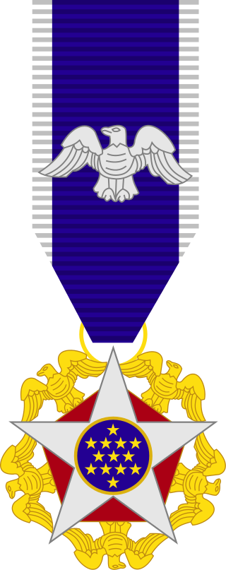

March 25, 1914
Cresco, Iowa, U.S.
September 12, 2009
Dallas, Texas, U.S.
General Introduction
Norman Ernest Borlaug was an American agronomist who led initiatives worldwide that contributed to the extensive increases in agricultural production termed the Green Revolution.
Borlaug was awarded multiple honors for his work, including the Nobel Peace Prize, the Presidential Medal of Freedom and the Congressional Gold Medal, one of only seven people to have received all three awards.
Awards
Some outstanding awards...
1970
The Nobel Peace Prize is one of the five Nobel Prizes established by the will of Swedish industrialist, inventor and armaments manufacturer Alfred Nobel, along with the prizes in Chemistry, Physics, Physiology or Medicine and Literature.
1970
The Mexican Order of the Aztec Eagle forms part of the Mexican Honors System and is the highest Mexican order awarded to foreigners in the country.
2004
The National Medal of Science is an honor bestowed by the President of the United States to individuals in science and engineering who have made important contributions to the advancement of knowledge in the fields of behavioral and social sciences, biology, chemistry, engineering, mathematics and physics
2006
The Padma Vibhushan ("Lotus Decoration") is the second-highest civilian award of the Republic of India, after the Bharat Ratna.
1977
The Presidential Medal of Freedom is the highest civilian award of the United States, alongside the Congressional Gold Medal.

Here's a time line of Dr. Borlaug's life
1914 Born in Cresco, Iowa.
1933 Leaves his family's farm to attend the University of Minnesota, thanks to a Depression era program known as the "National Youth Administration".
1935 Has to stop school and save up more money. Works in the Civilian Conservation Corps, helping starving Americans. "I saw how food changed them", he said. "All of this left scars on me".
1937 Finishes university and takes a job in the US Forestry Service.
1938 Marries wife of 69 years Margret Gibson. Gets laid off due to budget cuts. Inspired by Elvin Charles Stakman, he returns to school study under Stakman, who teaches him about breeding pest-resistent plants.
1941 Tries to enroll in the military after the Pearl Harbor attack, but is rejected. Instead, the military asked his lab to work on waterproof glue, DDT to control malaria, disinfectants, and other applied science.
1942 Receives a Ph.D. in Genetics and Plant Pathology.
1944 Rejects a 100% salary increase from Dupont, leaves behind his pregnant wife, and flies to Mexico to head a new plant pathology program. Over the next 16 years, his team breeds 6,000 different strains of disease resistent wheat - including different varieties for each major climate on Earth.
1945 Discovers a way to grown wheat twice each season, doubling wheat yields.
1953 Crosses a short, sturdy dwarf breed of wheat with a high-yeidling American breed, creating a strain that responds well to fertilizer. It goes on to provide 95% of Mexico's wheat.
1962 Visits Delhi and brings his high-yielding strains of wheat to the Indian subcontinent in time to help mitigate mass starvation due to a rapidly expanding population.
1970 Receives the Nobel Peace Prize.
1983 Helps seven African countries dramatically increase their maize and sorghum yields.
1984 Becomes a distinguished professor at Texas A&M University.
2005 States "we will have to double the world food supply by 2050." Argues that genetically modified crops are the only way we can meet the demand, as we run out of arable land. Says that GM crops are not inherently dangerous because "we've been genetically modifying plants and animals for a long time. Long before we called it science, people were selecting the best breeds".
2009 Dies at the age of 95.
Tributes to Norman Borlaug from around the world
Excerpted from Tributes to Norman Borlaug from around the world.
Indian Prime Minister Manmohan Singh
UNICEF Executive Director Ann Veneman